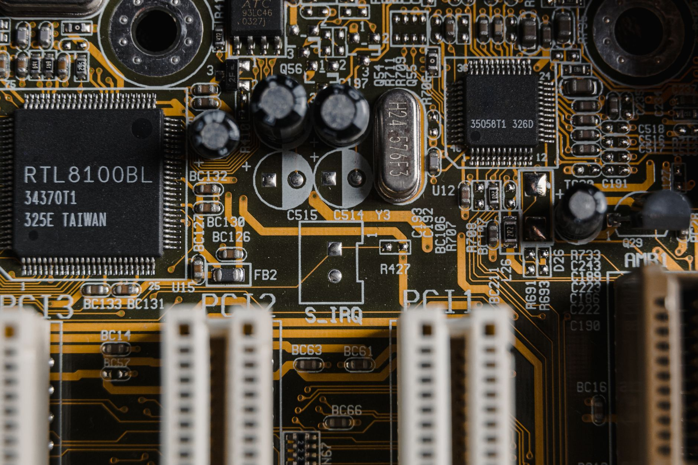

일본 17개 산업 IP전략, 한국과 특허 격차 구조화

[자료사진] 기사와 무관한 이미지입니다.
일본 특허청은 2024년 '지식재산 추진계획 2024'를 통해 반도체·AI·양자·우주·로봇 등 17개 성장산업에 대해 사업 기획 단계부터 특허 포트폴리오를 설계하는 'IP 경영 내장형' 지침을 기업에 의무 권고했다. 경제산업성은 이를 보조금 심사 기준에 연동해 IP 전략 부재 기업의 첨단산업 지원 배제를 명문화했다.
일본의 반도체 관련 특허 등록 건수는 2023년 기준 연간 약 3만 2,000건으로 한국(약 2만 4,000건)보다 33% 많다. 특히 차세대 전력반도체(SiC·GaN) 분야에서 일본 기업(로옴, 후지전기, 미쓰비시전기)의 특허 집중도는 글로벌 상위 10개사 중 4개를 차지한다.
한국의 경우 특허 출원이 제품 출시 이후 분쟁 대응 목적으로 이루어지는 비율이 전체의 약 60%에 달한다(특허청 2024년 산업재산권 통계). 반면 일본은 표준특허 사전 확보 비율이 신산업 진입 기업 기준 78%로, 기술 개발과 IP 전략이 동시에 설계되는 구조다.
삼성전자·SK하이닉스의 HBM 관련 특허 출원은 2022~2024년 급증했으나, HBM 주변 인터페이스·패키징·열관리 분야의 표준특허 보유 비율은 미국 인텔·AMD 대비 40% 수준에 그친다는 분석이 나온다(IP서치코리아, 2025년 보고서).
일본의 IP 내장형 전략이 무서운 이유는 '특허 수'가 아니라 '표준 편입 설계'에 있다. 특허가 기술 표준에 들어가는 순간, 해당 산업의 모든 플레이어는 라이선스 없이 시장에 참여할 수 없다. 일본이 SiC 전력반도체와 첨단 패키징 분야에서 표준특허를 선점하면, 한국 팹들은 로열티 부담을 안고 경쟁해야 한다.
한국은 제조 속도와 메모리 집적도에서 세계 1위지만, 그 기술 우위가 IP로 방어되지 않으면 후발국에게 복제당하거나 특허 소송에 노출된다. 미중 기술 분리 이후 중국이 특허 회피 설계(design-around)에 막대한 R&D를 투입하고 있는 현실이 이를 방증한다.
IP 내장 전략을 조기 구축한 일본 전력반도체 3사(로옴·후지전기·미쓰비시전기)는 GaN·SiC 시장 확대 국면에서 라이선스 수익과 시장 접근 우위를 동시에 확보한다. GaN 전력반도체 시장은 2025년 약 23억 달러에서 2030년 80억 달러로 연평균 28% 성장이 예측된다(Yole Développement).
한국에서는 파워 소자 IP 포트폴리오를 사전 구축한 DB하이텍, 예스파워테크닉스 등이 일본 표준특허 의존도를 줄이는 방향으로 전략 전환 시 수혜를 받을 수 있다.
IP 전략 없이 팹 증설에만 집중한 한국 중견 파운드리들은 GaN·SiC 양산 본격화 시점에 표준특허 라이선스 비용을 추가로 부담해야 한다. 로열티율이 칩 판가의 3~5%만 되어도 수익성에 직접 영향을 준다.
정부 보조금을 받아 첨단산업에 진입하는 스타트업·중소기업의 경우, IP 전략 부재 상태에서 제품을 출시하면 대기업의 특허 소송 리스크에 무방비로 노출된다.
첨단산업 투자자는 기업의 기술력 지표로 매출·점유율 외에 '표준특허 보유 비율'과 '출원 시점 대비 사업 개시 선행도'를 추가해야 한다. 사후 출원 비율이 높은 기업은 IP 리스크가 내재된 것으로 봐야 한다.
한국 산업부와 특허청의 소부장 지원 프로그램에 IP 전략 사전 설계를 필수 요건으로 포함시키는 정책 변화가 시급하다. 현재 1,700억 원 규모의 소부장 투자 지원에서 IP 심사 비중은 전체 평가의 10% 미만으로 알려져 있다.
실제 조달 현장에서는 — 일본 소재·부품 공급사들이 납품 계약서에 'IP 라이선스 포함 공급' 조항을 표준화하면서, 단가 협상이 기술 협상으로 바뀌고 있다. 한국 구매 담당자들이 '단가만 보던' 관행에서 벗어나지 않으면, IP 조항이 포함된 계약에서 예상 외 비용이 발생한다. 계약 검토 시 IP 라이선스 범위와 재판매 조건을 반드시 법무팀과 병행 검토해야 한다.
이 포스팅은 쿠팡 파트너스 활동의 일환으로 수수료를 제공받습니다.